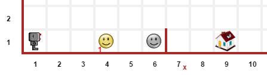
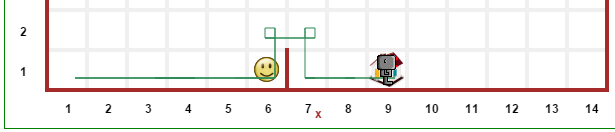
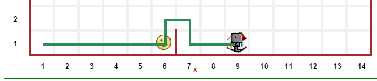
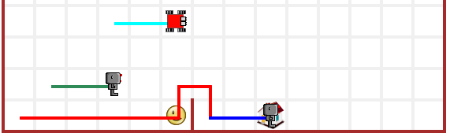
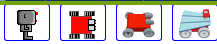
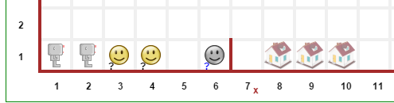
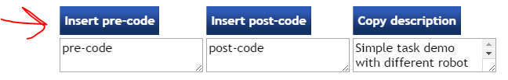

Reeborg’s World is designed to make it easy to set up programming tasks that provide automated feedback to students. However, sometimes some additional customization might be desired. This section documents various possibilities, some of which have already been mentioned elsewhere.
First, we consider a simple task. Load the following:
World("Demo 1")
The initial task to accomplish looks like:

and the final result is as follows:

This demo is saved as a permalink, including code in the editor and in the library; it is also available from the html select element at the top.
By default, Reeborg leaves a trace slightly “off-center”, thus showing clearly a difference between a left turn and a right turn (done by doing 3 left turns). Perhaps you want to show the path taken by Reeborg, without giving any hint about using 3 left turns to turn right; this can be done using the following code:
set_trace_style("thick")
The result looks like the following:

Alternatively, suppose you wish to show the robot accomplishing its task but without leaving a trace behind. You can use “none” instead of “thick” to do this. (The normal case would be “default” and is reset automatically.)
Important
set_trace_style, with the values of "thick" or "default" is a global function that affects the traces of all robots. If it is called multiple times within a program, only its last invocation will have an effect.
When a value of "none" is chosen, the trace is drawn with a completely transparent color which can be overriden. As shown below, robots can have traces of different colors.
Different robots can have different trace colors or can even change the color of the trace left behind at any point within a program. Load up:
World("Demo 2")
to see an example of this. Valid names color, to be used to the argument of set_trace_color() include html named colors, rgb values, and rgba values - the latter being useful to make a trace temporarily invisible.

By design, the choice of robot model is left to the user, who can choose their robot model by clicking on a image button at the top of the world.

All robots normally present will be of the same model. However, when creating a robot, it is possible to assign a specific model (integer from 0 to 3) using the following:
reeborg = UsedRobot()
reeborg.set_model(0)
This is also demonstrated in:
World("Demo 2")
mentioned above.
It is possible to design worlds so that the initial position of the robot is chosen randomly from specified choices; in this case, a slighthly transparent image will initially appear at all the possible locations.
Similarly, it is possible to assign a range of possible values for the number of objects found at a given location. If this is done, it is possible to require to have all of the objects (total initial number unknown) of a specific type to be put at a given location. In these cases, a question mark initially appears next to the number of objects when the world is drawn. The specific values at each run appear after the first step of the program’s execution.
Finally, it is possible to have the final position of the robot to be chosen amongst a given set.
All of these are demonstrated in the example:
World("Demo 3")

When editing the world, you can add a extra code that will be run either before the user’s program is run, or after it is run, or both.
Warning
A word of caution: if you include post code and the user include the instruction done() in their program, the post code will never be reached when done() is executed. In this case, a good strategy is to redefine done() in the pre code part, perhaps replacing it with something like this:
def done():
raise ReeborgError("You are not allowed to use 'done()'.")

You can see a very simple example of this by selecting the world Pre & Post code demo and then run the resulting program, which simply insert a print statement before and another one after the program in the editor. A much longer example, illustrating the usage of narration() is the world Story. This program adds a “twist” to the story, simply included for effect: make sure to let the program run to the end.
Suppose you want to use a robot that can has enhanced capabilities in one of your examples while using an existing world. For instance, suppose I want to show a solution to jumping over the hurdle with a robot that can turn right directly, without doing three left turns. One “obvious” way might be as follows:
This approach would work … except that the world initially shown will not have any robot visible and would thus be different than what the students would see when they would attempt to work on it with their robot.
There is a better way!
Note
By using this code in the “pre” code, or in the library, we ensure that the line executed is not “highlighted” and have a frame with no robot present.
Either in the “pre” code, or in the library you can use the instruction:
RUR.world.remove_robots()
as the very first instruction in your program, and then create an instance of your robot with the desired enhanced capabilities. Since there will be only one robot in the world, basic instruction like move()` or ``turn_left() will work on your robot as-is: by design, they work with the first robot created without requiring the instance name.
Have a look at the world Robot replacement to see an example where a new robot, capable of turning right directly, is defined in the library and replaces the default robot.
From Additional menu at the top, you can find the button “Collaboration”: this activates Mozilla’s TogetherJS which allows two, or more, users to effectively interact on the same webpage.
Programs are executed in two steps: first, the program is run and a series of “frames”, representing the complete state of the world at that time, are recorded. Second, these frames are played back one at a time.
From the Additional menu, one has access to a “step back” button which steps backwards, one frame at a time, instead of forward.
An example of such use might be to run a program quickly, by setting think(0) up to a “crucial” point at which the program is paused using pause(). From that point on, the program could be run either forward or backward, one frame at a time, allowing to focus on one particular aspect being demonstrated.
As mentioned elsewhere, it is fairly straightforward to port Reeborg’s World so that languages other than English can be used. Currently, only French is completely supported. Thus, one can write:
from reeborg_fr import *
avance() # equivalent to move()
tourne_a_gauche() # equivalent to turn_left()
However, French users should use http://reeborg.ca/monde.html which has a French User Interface.
Brython comes with a significant portion of Python’s standard library; however only pure Python modules are supported.
Support for Python, Javascript and CoffeeScript. Other languages could be supported as well if they have a javascript transpiler.
Todo
It is possible to embed Reeborg’s World in a different website using an html iframe. I need to explain how to do this.
One teacher in Lithuania has made Reeborg’s World accessible within Moodle for students tasks that are then marked automatically. Ideally, such use should be made with local copies of Reeborg’s World.
If you know Javascript, html and css, and possibly how to use the jQuery library, you can customize the look of Reeborg’s World by running code with a specially crafted permalink; the changes made will remain until the site is reloaded.
If you want to make your own changes, you might want to open Reeborg’s World into a separate tab and enable the javascript console. Then, use Javascript/jQuery commands in the console to change the UI as desired. Copy all of your required code (not forgetting semi-colons…) into the textarea below.
For example, suppose you wanted to hide the choice of programming language selection; you could do so using the following jQuery code:
$("#header-child form").hide();
You can use the above as an example and copy it into the textarea below and then click the “Create permalink code” button; the result will appear below the button. Note that you need to create all the UI changes into a single conversion. Once you have the result, copy it and append it to a “normal” permalink created within Reeborg’s World; your new permalink, when used to update Reeborg’s world, will make the required changes to the UI.
If you need help with making changes to the User Interface, please do not hesitate to contact me.